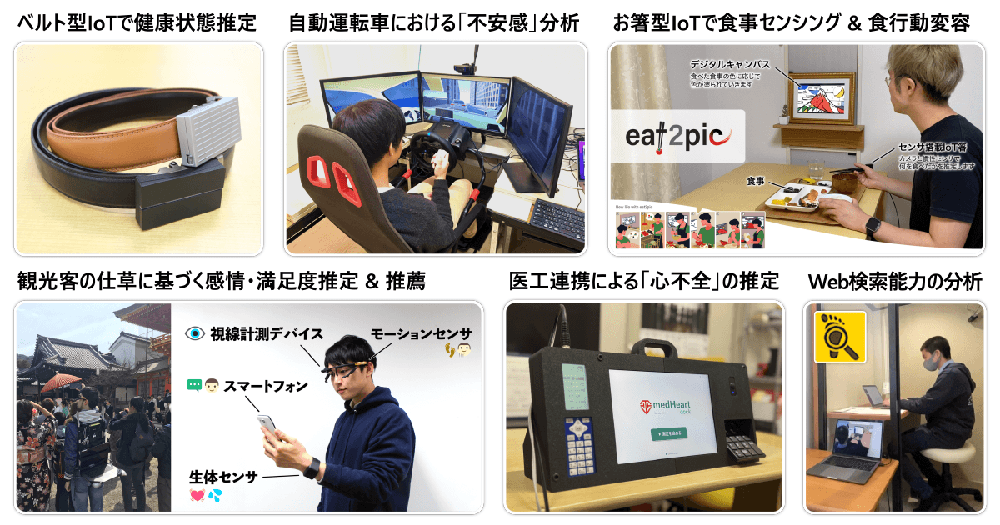
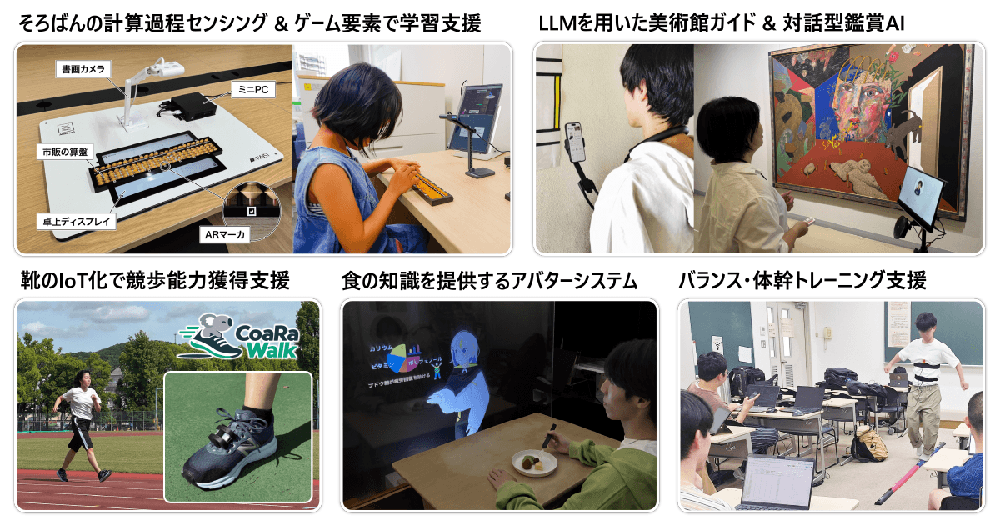
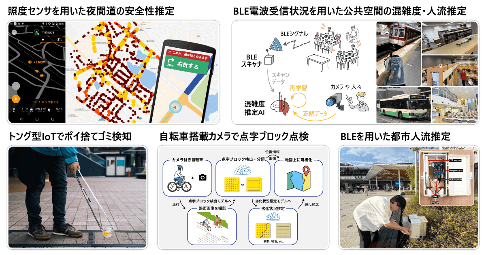
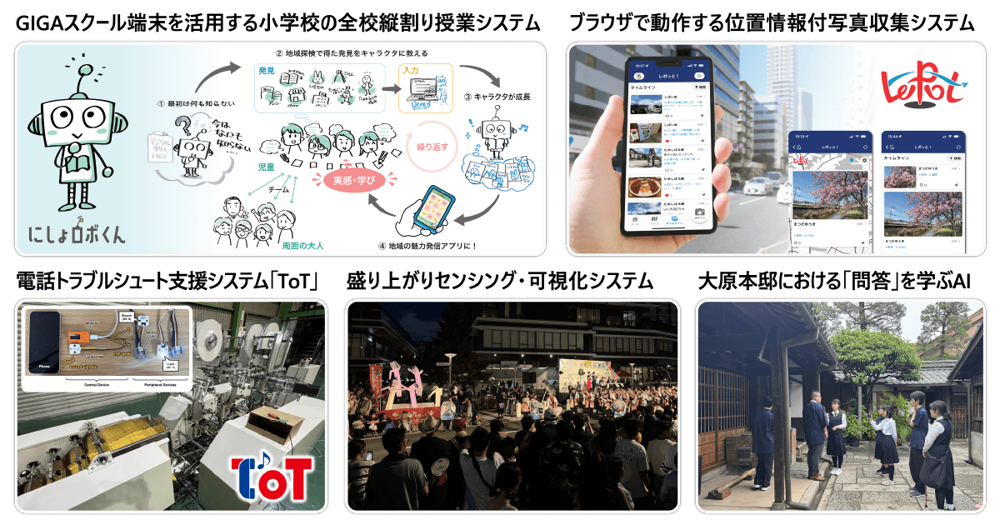
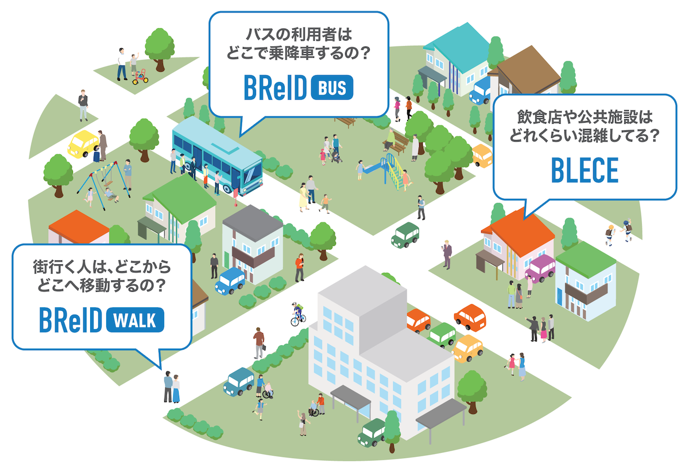

概要

人の状態を理解するAIoT
ウェアラブルデバイスやカメラ、各種センサを用いて、健康状態、感情、満足度、不安感、食行動などを捉える研究です。人の内面や行動をAIで読み解き、一人ひとりの状況に合った支援や情報推薦につなげることで、安心して健やかに暮らせる社会を目指します。ベルト型IoTによる健康管理や運転時の不安感分析、食事センシング、観光客の感情推定など、多様な場面を対象としています。

人の能力を育てるAIoT
珠算の計算過程、美術鑑賞時の対話、競歩やバランス運動などをセンシングし、学習や技能の向上を支える研究です。AIによる助言や対話、個人に合った情報提示を通して、誰もが楽しみながら主体的に学び、能力を伸ばせる体験の実現を目指します。学習者のつまずきや動作の特徴を捉え、ゲーム要素や対話型AI、ウェアラブル機器を通じて、継続的な挑戦と上達を後押しします。

都市・空間の状況を理解するAIoT
BLE電波、照度センサ、カメラなどを活用し、人流や混雑度、夜間道路の安全性、路面や街なかの状態を捉える研究です。プライバシーに配慮しながら都市・交通・生活空間を継続的に観測し、安全で快適なまちづくりに役立つ情報として可視化します。公共交通や駅、商業施設、道路などで収集したデータを分析し、混雑緩和、移動支援、設備点検や環境改善への活用を目指します。

研究成果の社会実装
研究室で生まれた技術を、学校、地域、企業、文化施設などの現場で活用できる仕組みへ発展させます。地域の人々や連携機関と試行と改善を重ね、専門知識がなくても使いやすく、日々の活動の中で持続的に運用できるシステムやサービスを共につくります。小学校での地域学習、位置情報付き写真の収集、地域イベントの可視化、現場のトラブル支援などを通じて、研究成果を社会へ届けます。
人の状態を理解するAIoT
マルチモーダルセンシングによる心理状態推定＆ナビゲーション
EmoTour： 観光客のマルチモーダルな感情・満足度推定
スマートフォンをはじめとするスマートデバイスを活用し、観光中に有益な情報が得られる「スマートツーリズム」が注目を集めています。このスマートツーリズムにおいて、より観光客の状況に即した観光情報を提供するためには、観光客が実地で抱く心理状態（感情・満足度など）を理解し考慮することが重要です。
そこで本研究では、観光客の心理状態が観光中の無意識的な仕草、例えば頭や体の動きや表情や声色といった形で現れるという仮説のもと、その仕草を計測・分析することで観光中の観光客の心理状態を推定する手法の実現を目指しています。
Convivial Museum Guide： 理解度・興味によって変化する美術館ガイダンス
美術館は芸術作品を鑑賞する場として人々に親しまれています。しかし、美術館には膨大な数の展示作品があり、鑑賞者は興味や関心に合わせて作品を鑑賞することが難しいという課題があります。
本研究では、鑑賞者の心理状態を芸術作品を鑑賞する際の仕草のセンシングに基づき推定することで、鑑賞者の興味や関心に合わせたナビゲーションの提供や、鑑賞体験の向上につなげることを目指しています。
MuseMate： 言語的・非言語的な情報に基づく美術館対話型鑑賞AIoT
美術館などにおいて、対話を重ねながら美術作品を読み解いていく「対話型鑑賞（VTS： Visual Thinking Strategies）」を支援する相棒（Mate）をAIoTを活用し実現するプロジェクトです。
鑑賞者が口頭で話す「言語的な情報」に加えて、鑑賞者の視線や心理状態などの「非言語的な情報」を掛け合わせることによって、より自然な対話ができる対話システムを実現することを目指しています。
人の体感の推定
ソラシル： みんなの手でつくる「じぶん温度」
sorashiru（ソラシル）は、体感温度をアプリで記録するだけで、「じぶん温度」を知ることができるようになるアプリです。
人それぞれが感じる体感温度のことを「じぶん温度」と名付け、AIによる解析によって算出することを目指しています。
DisCaaS： 360度カメラをセンサとして用いるディスカッション中のマイクロ行動分析
DisCaaS（Discussion by Camera as a Sensor）は、1台の360度カメラで、少人数の対面ディスカッションに参加する全員の顔や振る舞いを同時に捉えるシステムです。
顔映像から「発話」や「うなずき」といった細かな行動を機械学習で認識し、誰がいつ話し、反応したのかを可視化・定量化します。議論の振り返りやファシリテーション、協働学習の評価に加え、オンライン会議への応用も目指しています。
回答行動のセンシングと品質推定
AnnoTrust： アノテーション作業における回答品質の推定
AnnoTrustは、機械学習用データを作るアノテーション作業中の操作をセンシングし、回答品質が低下する兆候をリアルタイムに捉えるプロジェクトです。
スマートフォンの向きや画面操作などから回答行動の特徴を抽出し、機械学習で品質低下を推定します。不良回答を早期に検知・防止し、クラウドソーシングで信頼できる学習データを効率よく収集することを目指しています。
SurveySense： オンラインアンケートにおける不適切回答の検出
SurveySenseは、オンラインアンケート回答時の画面操作ログを分析し、設問を十分に読まず最小限の労力で回答する「Satisficing」の発生を捉えるプロジェクトです。
回答時間やカーソル・タッチ操作など、回答中に自然に得られる情報から回答者の取り組み方を推定します。質問を追加して負担を増やすことなく、調査データの信頼性を高める仕組みの実現を目指しています。
人の能力を育てるAIoT
珠算行動センシングに基づく珠算学習支援
珠算では、問題に応じてさまざまな方法や順序で珠を操作するため、習得には長期にわたる反復学習が必要です。学習中に生じる計算ミスや苦手な珠操作には規則性があると考えられますが、従来は指導者が学習者の手元を観察して見つける必要がありました。
本研究では、市販の算盤をカメラで撮影し、画像認識によって盤面の数値や操作過程を推定します。学習履歴やつまずきを自動的に捉え、一人ひとりに合った問題やフィードバックを提示することで、自律的で継続しやすい珠算学習の実現を目指しています。
AbaCaaS： 書画カメラを用いた珠算行動センシング
書画カメラで市販の算盤を上方から撮影し、ARマーカを手がかりに盤面領域を特定して、画像認識により入力された数値を推定するシステムです。算盤そのものに電子部品を組み込まず、普段使っている道具をそのまま利用しながら、計算結果だけでなく操作過程も記録・分析できる学習環境の構築を目指しています。
AbaCaaS mini： モバイルデバイスのインカメラを用いた珠算行動センシング
AbaCaaS miniは、タブレット端末のインカメラと反射鏡を用いて学習者の手元を撮影し、市販の算盤に入力された数値や操作の完了を画像認識で推定するシステムです。書画カメラやミニPCなどの外部機材を必要とせず、タブレット端末を中心とした小型で持ち運びやすい学習環境を実現します。
使用時に反射鏡を適切な角度で展開し、未使用時には通常の保護ケースとして利用できる反射鏡一体型ケースも開発しています。学習者が算盤から手を離したタイミングを映像から検出することで、画面操作を挟まず、算盤操作だけで自然に解答を確定できる教材への応用を進めています。
CalcQuest： 苦手克服のためのゲーム要素を取り入れた珠算学習支援システム
AbaCaaSの盤面認識を活用して学習者の苦手な珠操作を検出し、その克服に適した計算問題を個別に生成する学習支援システムです。RPGのようにプレイヤーと敵が交互に攻撃するPvE形式のゲームを採用し、反復練習による負担を抑えながら、学習者が楽しんで苦手な問題へ挑戦できる仕組みを実現しています。
スポーツ支援
CoaRaWalk： ウェアラブルセンサと機械学習を用いた競歩コーチングシステム
CoaRaWalk（A Wearable Coaching System for Race Walking）は、靴や腰に装着した小型センサで足・身体の動きを計測し、機械学習によって競歩のフォームを評価する練習支援プロジェクトです。
両足が同時に地面から離れる「LC（ロス・オブ・コンタクト）」や、前脚の膝が曲がる「KB（ベント・ニー）」といった競歩特有のルール違反を自動的に検出し、発生したタイミングやフォームの改善点を分かりやすく提示することを目指しています。指導者や審判がいない環境でも、競技者が自分のフォームを客観的に振り返り、継続的に練習できるコーチングシステムの実現に取り組んでいます。
都市・空間の状況を理解するAIoT
BLEを用いた都市・交通空間の人流・混雑度推定

都市や公共交通、飲食店、公共施設などにおいて、「どこに人が集まっているのか」「人がどこからどこへ移動しているのか」を把握することは、都市計画、交通改善、混雑緩和、観光・商業施策、ナビゲーションなどに役立ちます。 このプロジェクトでは、スマートフォンやスマートウォッチなどの電子機器から発信されるBLE（Bluetooth Low Energy）アドバタイジングパケットを環境側で観測し、プライバシーに配慮しながら都市・交通空間における人流と混雑度を推定することを目指しています。
BLECEでは、人が空間にどれくらい滞在しているかを捉え、混雑度や体感混雑度を推定します。 BReIDでは、人が地点間をどのように移動しているかを捉え、都市内の回遊行動や路線バスのODデータを推定します。
BReID Walk: 都市空間の人流推定
都市空間に複数のBLEスキャナを設置し、BLEのランダム化MACアドレスや電波受信状況を手がかりに、街なかの回遊行動や地点間の移動傾向を把握する手法の確立を目指しています。
BReID Bus: 路線バスのODデータ（乗降ログ）推定
車内で観測したBLEアドバタイジングパケットからデバイス系列を再同定し、乗客の乗車・降車地点を表すOD（Origin-Destination）データを推定します。
BLECE: 公共空間の混雑度・体感混雑度推定
BLE電波の受信状況を分析し、交通機関、飲食店、公共施設などの混雑度や体感混雑度を、カメラに頼らず低コストで継続的に推定する手法の確立を目指しています。
街の参加型センシング
Tongar： トングでゴミ拾いするだけでポイ捨てゴミの種別・位置を記録するシステム
ゴミ拾い用のトングにカメラを搭載し、「どこ」で「どんな」ゴミが「いつ」捨てられていたのかを自動で収集します。ポイ捨ての実態を可視化し、環境問題の解決に役立てることを目指しています。
BraiLoop： 自転車ユーザ参加型センシングによる点字ブロックの点検・可視化
自転車に小型カメラやGPSモジュールを取り付け、普段の移動中に路面画像と位置情報を収集するプロジェクトです。 AIを用いて画像から点字ブロックの配置や種別、劣化状況を検出し、地図上に可視化することで、点検・維持管理の負担を軽減し、視覚障害者が安全で快適に移動できる街の実現を目指しています。
共同研究・連携機関
- 自治体・行政機関
- 生駒市
- 奈良県
- 奈良県立美術館
- 佐賀市
- 民間企業
- 株式会社カワカミ
- 日本たばこ産業株式会社
- 讀賣テレビ放送株式会社
- ソフトバンク株式会社
- LINEヤフー株式会社
- 奈良交通株式会社
- YuMake株式会社
- 近鉄ケーブルネットワーク株式会社
- 一般財団法人西粟倉むらまるごと研究所
- 株式会社ローカルメディアラボ
- ピープルソフトウェア株式会社
- 大学・学術機関
- 奈良先端科学技術大学院大学
- 九州大学
- Universität Ulm（ウルム大学）
- DFKI（ドイツ人工知能研究センター）
- 大阪公立大学
- 慶應義塾ミュージアム・コモンズ
- 京都橘大学
- ノートルダム清心女子大学
- 立命館大学
研究成果の社会実装
プラットフォーム
ためしば： 市民みんなで育てる「まちの実験場」
「ためしば」は、自治体だけでなく、市民、民間企業、大学など、地域に関わる人々が一緒にまちをより便利で楽しくしていく、ボトムアップ型のスマートシティアプリです。完成したサービスを一方的に提供するのではなく、みんなの発想や活動に応じて機能が増え、自由自在に変化していく「まちの実験場」を目指しています。
アプリでは、ごみ収集スケジュールや給食献立、避難所情報など、暮らしに役立つさまざまなミニアプリを利用できます。また、地域の写真や街の状況を投稿したり、地域の出来事や活動を応援したりすることもできます。シビックテックの考え方に基づき、市民一人ひとりが情報の受け手にとどまらず、まちづくりに参加するプレイヤーとなれる基盤を構築しています。
▶ 詳細はこちら
レポっと： みんなの視点で街を記録する位置情報付き写真収集プラットフォーム
「レポっと」は、市民やイベント参加者など、さまざまな人の視点から見た街の様子を収集・共有する参加型センシングプラットフォームです。専用アプリをインストールせずWebブラウザから利用でき、位置情報付きの写真、コメント、ハッシュタグを手軽に投稿できます。
独自のハッシュタグを設定することで、街歩きや地域調査、季節の風景の記録、イベント参加者による共同収集など、目的に応じたデータ収集を行えます。これまでにも街の桜や中国・四国地方の魚の釣果など、多様なテーマで活用されてきました。集めた位置情報付き写真はデジタルアーカイブとして整理し、一部をオープンデータとして公開することで、地域の記録や研究、まちづくりへの再利用につなげています。
▶ 詳細はこちら
▷ 収集データのアーカイブはこちら
にしょロボくん： 小学生が創る地域のデジタル図鑑
子供目線で地域の情報を収集して「世界に一つだけの地域のデジタル図鑑：にしょロボくん」を創る、全校縦割り活動プロジェクトです。ワークシートやギガスクール端末を用いて様々な形式（テキスト・写真・音声・動画・地図・絵…）でニッチな街の情報を可視化します。
▶ 詳細はこちら
産学連携による技術実装
ToT： 電話回線を用いた遠隔設備保全システム
ToT（Telephone of Things）は、株式会社カワカミとの共同研究から生まれた、設備機器の電話サポートを支援するシステムです。既存の電話回線を使うため、現場にインターネット環境がなくても導入できます。
通話音声に機器向けの信号を重ねて送り、遠隔地にある設備の問題箇所をライトで指し示したり、モニターに画像を表示したりします。利用者と担当者の認識を視覚的に揃え、トラブル対応の簡易化・省力化を目指しています。
▶ 詳細はこちら
仕組み
みんサポ生駒
ソーシャルグッドな活動を市民の投票で支援する新しい共創の枠組みです。
▶ 詳細はこちら